May you all be blessed with peace and well-being! We are overjoyed to meet you in the Lord.
We sincerely thank you for yesterday's call, and especially for taking the time to meet with us — we are deeply grateful.
We are so glad to have such a community here in Austria. Through musicals, dance, singing, and puppet shows, you help children experience and share the Christian faith with joy. Thank you for your 32 years of faithful service in nurturing the faith of children and families.
Please allow us to briefly introduce our backgrounds:
I am Jenny Jiang, age 40, from China. Baptized since childhood, I am an English teacher and children's catechist.
My husband is Stephen Liu, age 38, also baptized since childhood, an IT engineer.
Our son Micheal (13), our eldest daughter Kandy (11), and our youngest daughter Teresa (8) are all currently attending school in Austria. After a challenging language transition, they have grown to love it here. Every day we attend Mass together and share evening prayer and scripture reading. They are especially eager to continue their studies in Austria once I graduate — this is one of the main reasons we hope to have the opportunity to stay here. If we return to China, the children will no longer be allowed to attend church.
I will be completing my MMF (Master of Marriage and Family) course on June 20th.
My husband and I have been participating in the CFC (Couples for Christ) community since 2012. The mission of this community is: "Through the Holy Spirit, renew ourselves, renew our families, and renew the face of the earth." couplesforchristglobal.org
With the support of our parish priest and the community, my husband and I established a new branch of CFC at our parish, growing from 2019 to 2024 to 57 members.
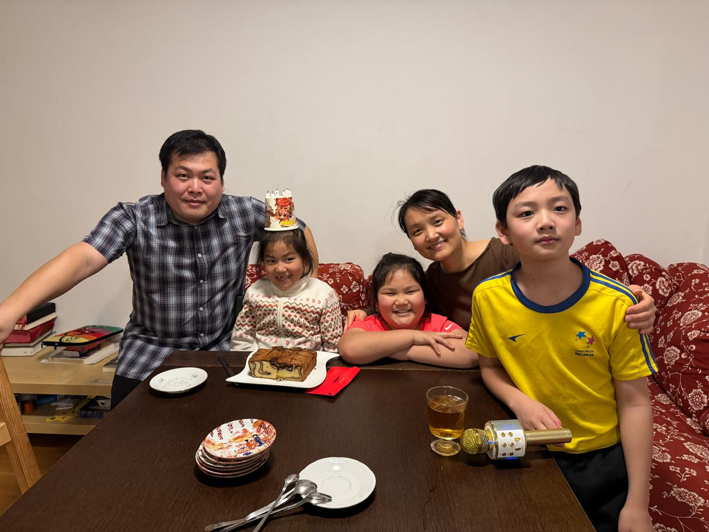
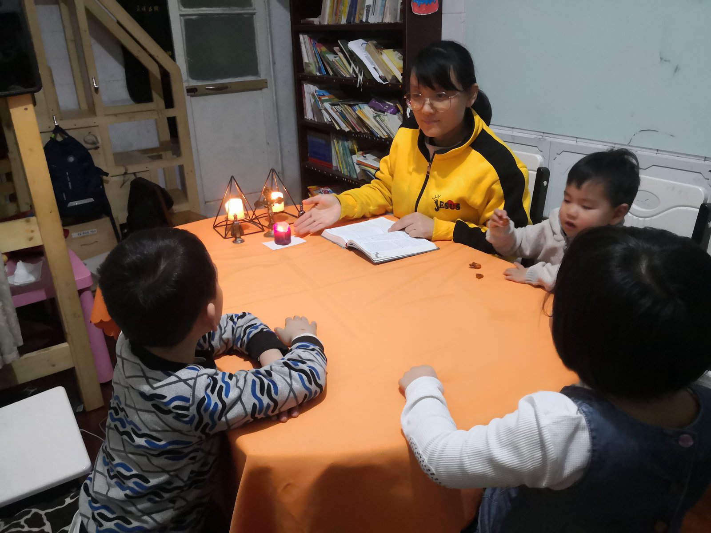
After arriving in Austria, we joined the local CFC branch and continued our participation in community activities.
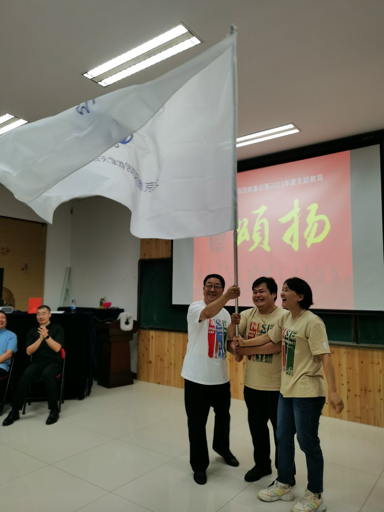
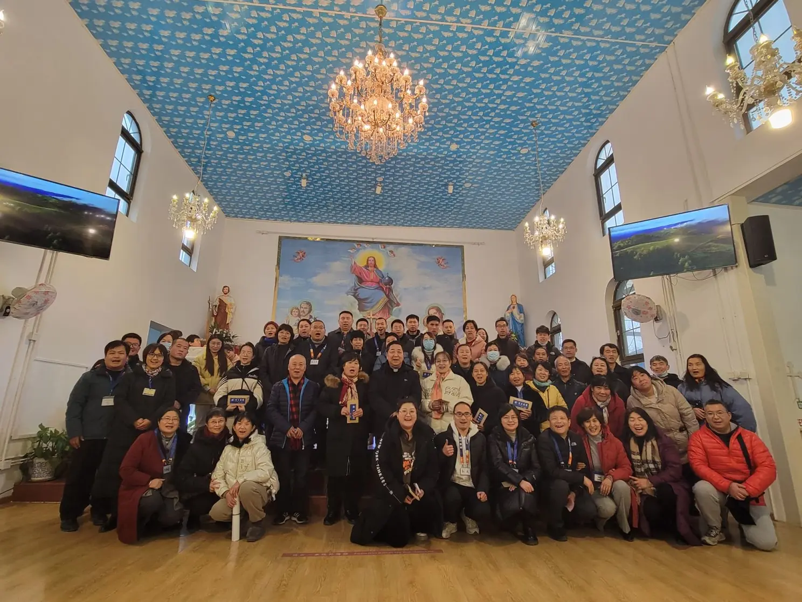
Serving as a speaker together with my husband for the Pre-Marriage Training Course of the Beijing Diocese
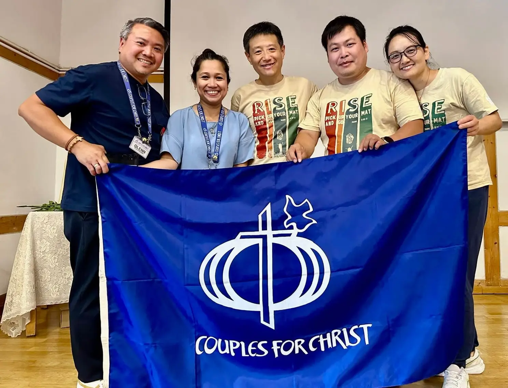
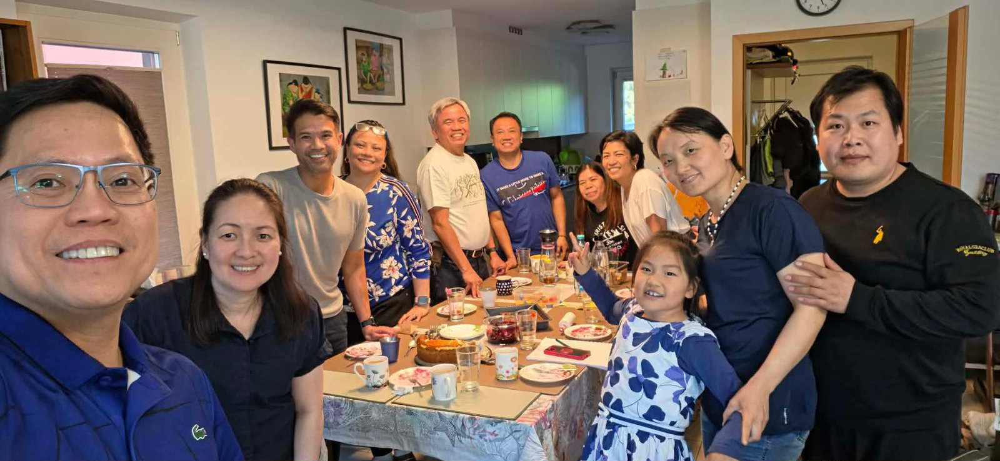
As a catechist, I teach children's religious education using materials from the Dominican Sisters (CFM Books): dominicansisters.net/cfmbooks
During my catechism teaching, I received guidance directly from the authors, along with assistance from others who helped translate the materials into Chinese. I also founded a Catechism Speaker Study Group to train catechists. However, with the intensifying policies of the Chinese government, everything came to a halt. I trust that the Lord has His own plan for all of this.
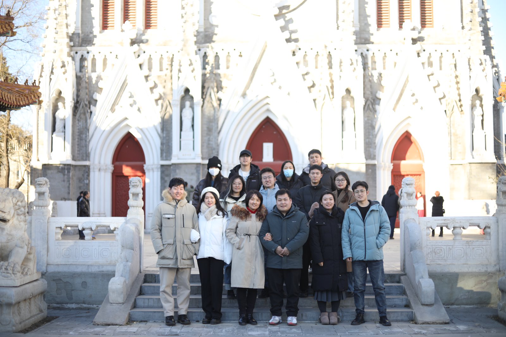
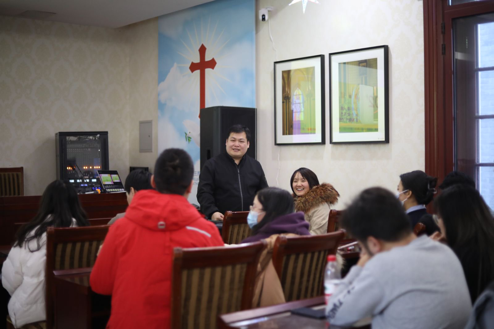
Before coming to Austria, we lived in Beijing for 12 years. From 2019 to 2024, I taught children's catechism every Sunday at our parish using curriculum from the Notre Dame de Vie (Life of Mary) community, France: notredamedevie.org
My husband and I officially joined the Notre Dame de Vie community in 2019 as family cooperators, sharing in its spirituality and charism. The above-mentioned catechism materials were written by members of this community, which allowed us to receive even more of its graces.
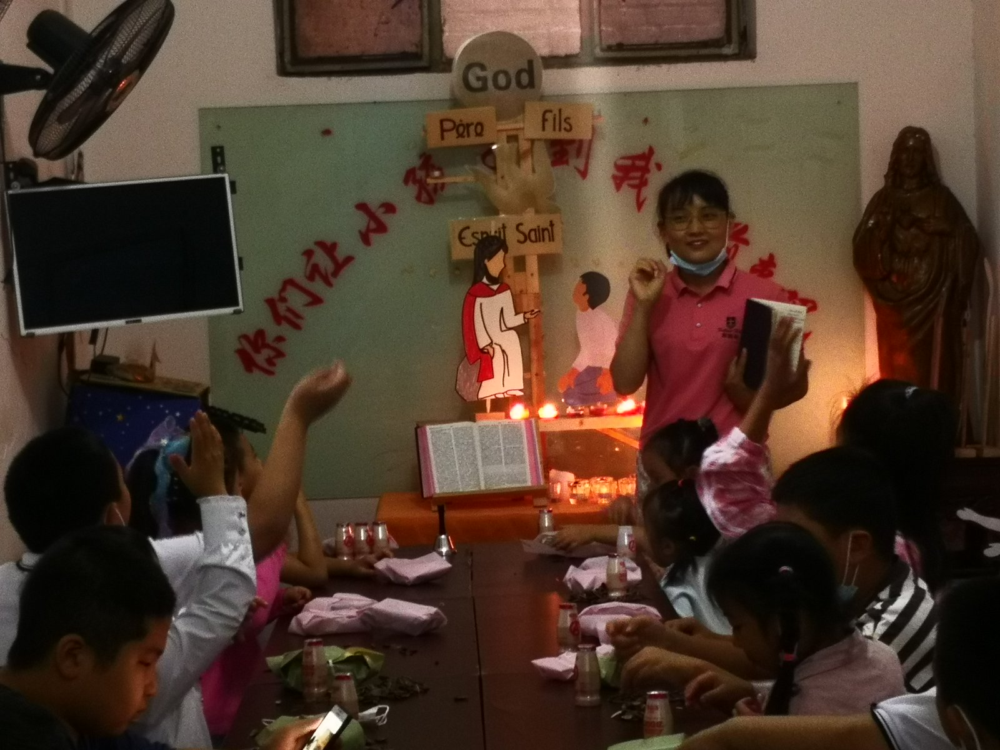
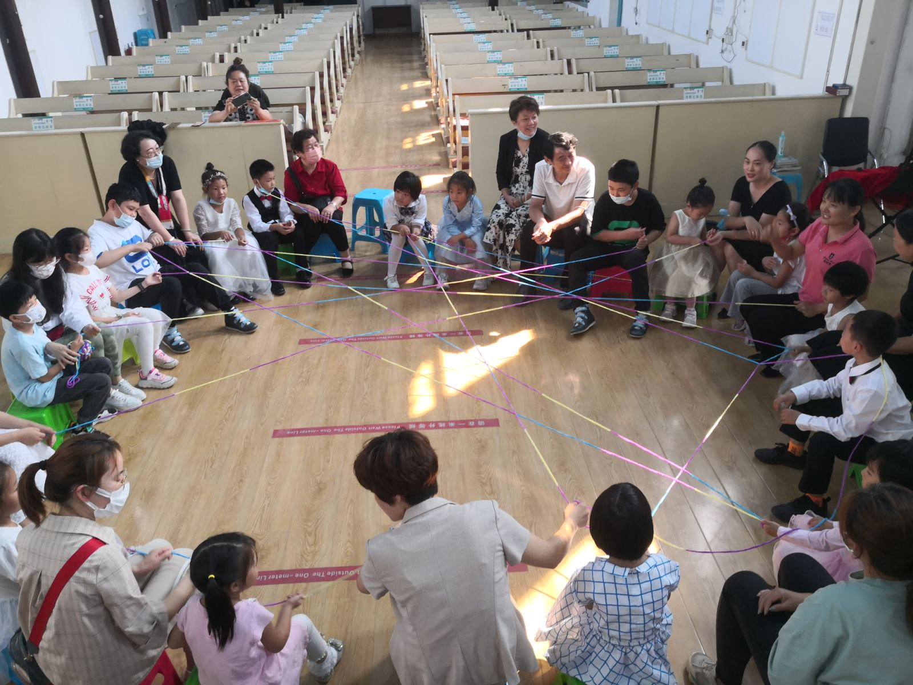
These things are not meant to boast, but simply to share honestly the graces that the Lord has poured upon our family. We are willing to entrust all things to the Lord, letting the Holy Spirit work and lead us forward.
May you all be blessed with peace in the Lord!
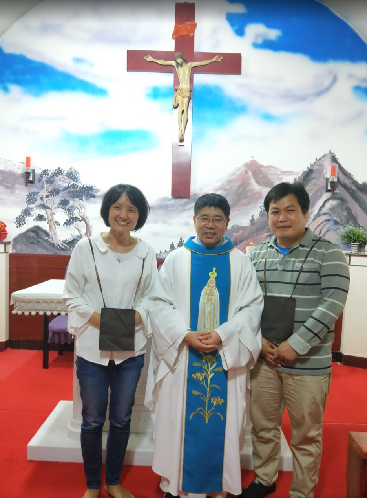
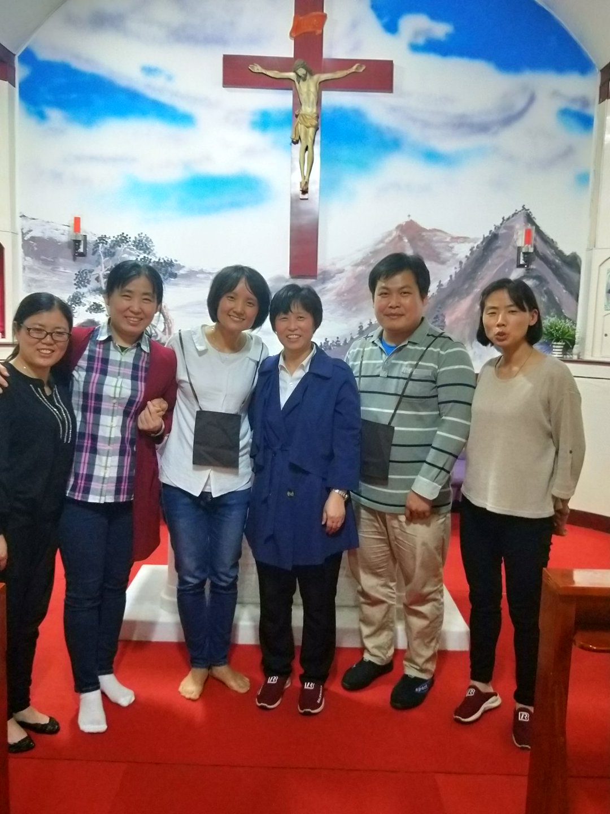